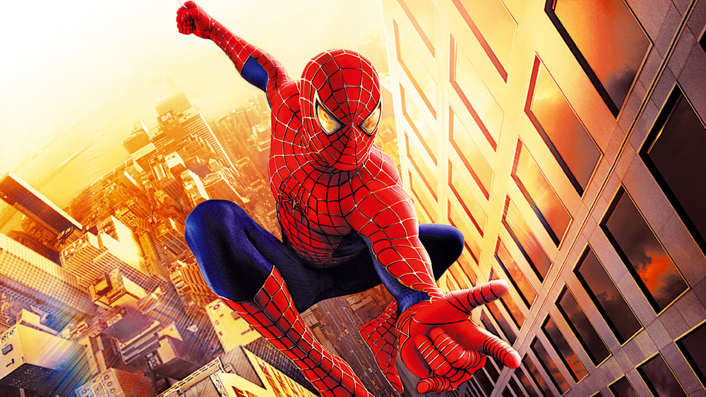

-
A Spider-Man Movie Review Revue
by Mitchel Green - June 2, 2023
|
mitchelgreen34@gmail.com

source: The Movie Database
With the upcoming “Spider-Man: Across the Spider-Verse” being released this week and seemingly featuring every version of Spider-Man created across all mediums, I want to take a look back at every Spider-Man feature film.
Spider-Man (2002)
Despite coming out over 20 years ago, the first “Spider-Man” film still feels fresh thanks to a glut of superhero films with a more ironic approach to their characters and stories. The earnestness of Sam Raimi’s original film can come off as corny, but that’s what makes it feel special. “Spider-Man” isn’t afraid of camp, and it finds that campiness organically — in the zaniness of Raimi’s camera movements and the hamminess of the line deliveries— rather than trying to manufacture it by forcing a sense of quirkiness. It isn’t the best Spider-Man film, but it is far better than most superhero films that came after it.
Spider-Man 2 (2004)
It pulls back on the corny stylization of the first one but never loses its sense of earnestness. Raimi still gets to have some fun — the scene where surgeons try to remove Doc Ock’s robot arms and get gruesomely murdered is a terrifying throwback to Raimi’s horror days — but his direction complements a tight, sharp screenplay that both explores themes of heroism, responsibility, and guilt and creates a world that feels lived in. Side characters that get one or two scenes — the lady playing the Spider-Man theme on the violin is a personal favorite — have more personality and character than modern-day superhero films would give random civilians. Combine these aspects with some of the most exciting set pieces in any superhero movie, and you get the best Spider-Man film.
Spider-Man 3 (2007)
A film that was overhated upon its release but has seen a weird reclamation that has swung it a bit too far in the other direction. It’s possible the newly found reverence for this film stems from the relative lifelessness of most modern superhero films — and, of course, its maintained relevance in meme culture — but it still isn’t good. It’s an overstuffed mess, with too many major characters and plotlines that never fit together into a cohesive whole. It has some redeeming qualities, particularly keeping the same earnestness and personality of the previous two Raimi installments, but it’s the weakest of the Tobey Maguire films.
The Amazing Spider-Man (2012)
A giant nothing of a film, “The Amazing Spider-Man” introduced Andrew Garfield as the titular hero and didn’t do much else of note. Despite being wholly unmemorable in every way, it somehow garnered enough nostalgia that the latest Spider-Man film felt the need to bring characters from this back in fan service. Sony scooped up promising young indie filmmaker Marc Webb to direct after his debut (500) Days of Summer, and he has done so little of note in movies since that his first description on Wikipedia is still “music video director” despite directing one music video since 2010. It’s a boring film by a boring filmmaker.
The Amazing Spider-Man 2 (2014)
Instead of waiting for the third film in the series to create an overstuffed mess, Marc Webb and company jumped the gun and did it for the second Andrew Garfield Spider-Man film. But while “Spider-Man 3” could fall back on the endearing qualities it carries over from the first two films, “The Amazing Spider-Man 2” doesn’t have any endearing qualities to carry over. The chemistry between Andrew Garfield and Emma Stone as Gwen Stacy is palpable, but it’s not enough to carry this bloated slog of a film. It’s for the best that Sony didn’t make any more after this.
Spider-Man: Homecoming (2017)
A fun little high school movie that becomes uninteresting whenever it has to go back to being the Marvel movie it is. The attempt to add some emotional weight with a proxy father-son relationship between Peter Parker and Tony Stark is a nice touch, but it feels distracting more than anything, if only because Robert Downey Jr. is so magnetic on screen that he takes away attention from the character whose movie this supposedly is. The best of the Tom Holland Spider-Man films, though the bar is not high.
Spider-Man: Into the Spider-Verse (2018)
Infinitely better than the live-action Spider-Man series it released in the middle of. The speed with which this film moves is matched brilliantly by its stellar, dynamic animation — a visual style so full of life that it somehow makes the MCU Spider-Man films look more flat and dull than they already are. I’m pretty much out on superhero movies at this point, only seeing them to write about them, but the sequel to “Into the Spider-Verse” is the only one in a long time to get me genuinely excited.
Spider-Man: Far From Home (2019)
“Far From Home” had the unfortunate task of following up “Avengers: Endgame,” and it was not up to the challenge. Most of the problem is just the nature of the film — another light, slight high school-superhero movie mashup that doesn’t mesh with the epicness of the previous Avengers film but still has to deal with the fallout. It’s a tonally confused mess — trying and failing to balance the bouncy fun of “Homecoming” with the grief Peter feels over Tony Stark’s death. Like most MCU movies, it isn’t terrible, but it rarely does anything to make it worthy of a second thought.
Spider-Man: No Way Home (2021)
A competently made film that is also one of the most cynical, disgusting works of popular culture in recent memory. It’s an interesting attempt to integrate the multiverse framework into the MCU, but it panders to its audience so much that it quickly becomes annoying. It’s a film with nothing more to say except, “Hey, remember this?” It also seems to think people’s nostalgia for older Spider-Man movies extends to unmemorable characters from bad films. Maybe some people did feel something seeing Jamie Foxx’s Electro again, but it left me cold and empty. It’s the film where I officially checked out of the MCU after years of slow, steady, declining interest.